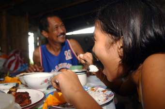
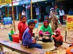
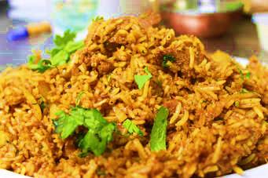

Bangladeshi people follow certain rules and regulations while eating. It includes warm hospitality and particular ways of serving as well. This is known as Bangaliketa. The culture also defines the way to invite people to weddings and for dinner. Gifts are given on certain occasions. Bangaliketa also includes a way of serving utensils in a proper manner of Bangladeshi Food.Bangladeshi cuisine incorporates the use of pastes – spices and roots ground smooth.
Green chilli peppers are ubiquitous in Bangladeshi cuisine. Other common pastes include a combination of any of the following: ginger, garlic, red chilli peppers, turmeric, onion, cinnamon, coriander, cumin, or mustard seed. There are mainly three kinds of foods in Bangladesh. They are:
1.Staple Food
2.Street Food
3.Occasional Food
Staple Food:
Fish and rice are the staple food of Bangladesh. Rice is a staple food of Bangladesh. About 160 million peoples in Bangladesh depend on rice as the main food and about 75 per cent of agricultural land use to grow rice. Furthermore, fish is also a staple of popular Bangladeshi food, being fused into many traditional dishes. A wide range of fish and seafood is eaten across Bangladesh, the most popular being the national fish, hilsa, but other common fish include catfish, tilapia and rohu.Hilsa (or ilish) curry is the national dish of Bangladesh, made from the Hilsa fish, and is one of the most popular traditional Bangladeshi dishes. For the rich amount of users of rice and fish, they are called “Macche Bhate Bengali”
Street Food:
Bangladesh is also very famous for its street food. Many items of foods are found on the street that looks more attractive to the people of the world. Dhaka Street Food is part of the Bengali cuisine in Bangladesh. Noted for its subtle, yet sometimes fiery flavours, Bengali cuisine has an emphasis on ingredients such as fish, lentils, and rice. Besides a large influence from West Indian cuisine and South Indian cuisine, Dhaka Street Food in Bangladesh is also heavily influenced by British cuisine, Chinese cuisine, and Turkish cuisine. Beef Bhuna is a popular dish amongst the Muslim community of Dhaka, Bangladesh. It's made by stewing chunks of beef in a spice mixture of onions, ginger, garlic, salt, powdered cumin, powdered coriander, powdered turmeric, powdered cardamom, pepper, chilli, tomatoes, lemon juice, tamarind juice, cloves, cinnamon sticks, bay leaves, and garnished with coriander leaves. It's considered a wet curry dish, often served with rice or bread. A typical Vegetable Bhaji here may feature a variety of different vegetables, though common ones such as potatoes, carrots, celery, cauliflower, and/or onions are normally used. Many more interesting food items are also available on the street of Bangladesh.
Occasional Food:
Besides staple food and street food Bangladesh has also some occasional food items. If they celebrate any function they cook some more interesting food items. They cook Shahi kabab,biriyani,firni,lassi,semai,Jorda and many more items. In some special occasion, they cook special kinds of foods.
